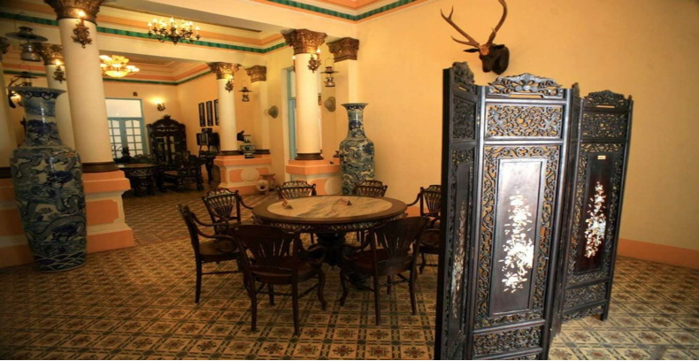
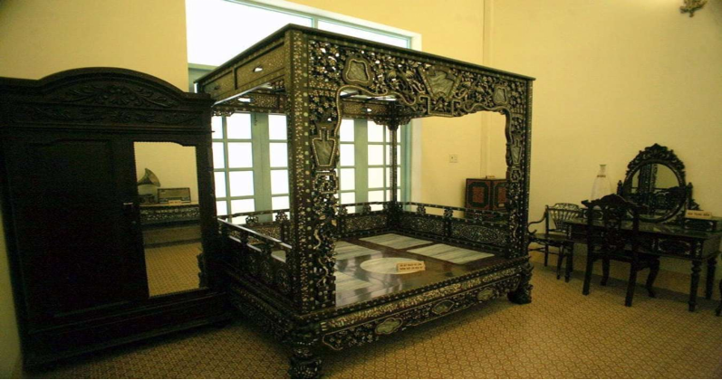
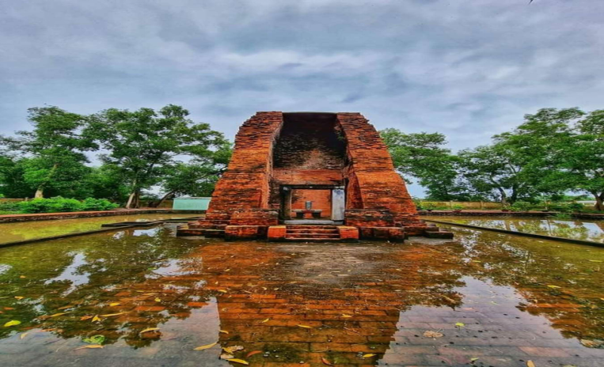
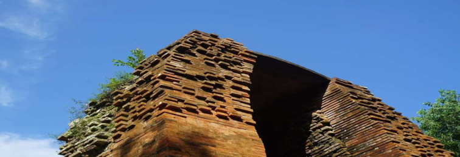
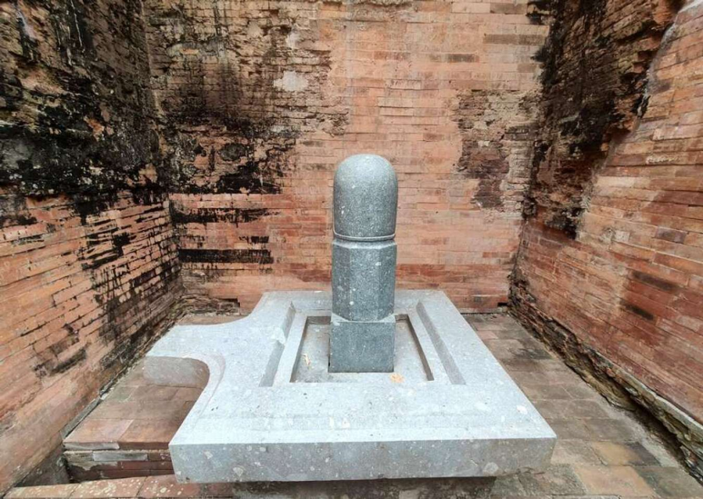
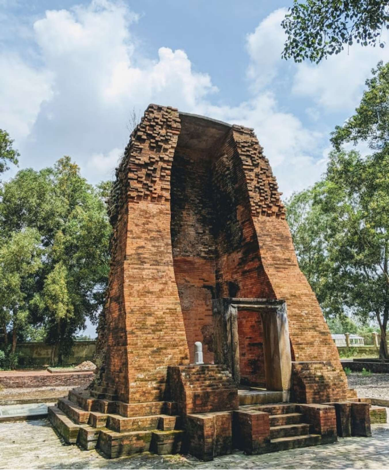

WIKI VIỆT NAM

Bạc Liêu là 1 trong 13 tỉnh của miền Tây Nam Bộ và thuộc khu vực đồng bằng sông Cửu Long. Nơi đây còn là một vùng đất “phủ” vàng bởi nhiều cánh đồng lúa trù phú và nổi tiếng với câu chuyện công tử Bạc Liêu. So với nhiều tỉnh miền Tây khác, Bạc Liêu được xem là một trong những “thiên đường” du lịch với cực nhiều điểm check-in thú vị. Cùng Traveloka điểm danh ngay top 8 địa điểm du lịch Bạc Liêu bạn cần lưu lại gấp cho chuyến vi vu tới nhé!
Bạc Liêu có rất nhiều tọa độ vi vu thú vị dành cho hội mê xê dịch
Không chỉ tại Bạc Liêu, công trình cổ này còn nổi tiếng khắp miền Tây. Nằm ngay cạnh dòng sông Bạc Liêu và tọa lạc tại số 13 cung đường Điện Biên Phủ, ngôi nhà bề thế này được xây dựng trong vòng 2 năm (1917 - 1919). Với khối kiến trúc hoành tráng bậc nhất thời bấy giờ, người dân địa phương gọi nơi đây bằng cái tên thú vị “nhà lớn”.
Căn nhà đậm chất Pháp nằm tại trung tâm thành phố Bạc Liêu
Nhà công tử Bạc Liêu là một trong những công trình bề thế nhất miền Tây khi xưa
Nhà công tử Bạc Liêu là một trong những công trình bề thế nhất miền Tây khi xưa nhà gồm 2 tầng, 5 phòng ngủ và 4 đại sảnh được trang hoàng nội thất cực sang trọng. Điểm đặc trưng của công trình này là những bức tường sơn trắng nhã nhặn, trần nhà chạm trổ cực tinh xảo, khung cửa màu xanh dương sáng, nền gạch hoa và vật dụng gỗ chạm khắc xà cừ.
Hành lang cực rộng lưu thông giữa các tầng trong dinh thự.
Nội thất gỗ chạm khắc xà cừ là một trong những nét đặc trưng của công trình này.
Không gian sinh hoạt cực xa hoa tại nhà công tử Bạc Liêu.
Một góc phòng ngủ trong nhà công tử Bạc Liêu.
Đặc biệt, ngôi nhà này là tác phẩm của một kiến trúc sư người Pháp và hầu hết vật liệu đều được vận chuyển về từ Paris. Chính vì vậy, từng chi tiết trong căn nhà đều phảng phất vẻ đẹp cổ điển và xa hoa đậm chất Pháp.
Khi tham quan tại đây, giá vé là 30.000đ/vé người lớn và 20.000đ/ vé trẻ em. Traveloka mách nhỏ bạn nên chờ hướng dẫn viên để được nghe thuyết minh về từng câu chuyện gắn liền với mỗi hiện vật bên trong. Ngoài ra, cung đường bên ngoài ngôi nhà tập hợp nhiều hàng quán bày bán các món ăn nổi tiếng của Bạc Liêu, trong đó, bạn nhất định phải thử món lẩu công tử nhé.
Cách trung tâm thành phố Bạc Liêu khoảng 20km, tháp cổ Vĩnh Hưng là một khối kiến trúc được tìm thấy bởi học giả người Pháp - Lunet de Lajonquiere vào năm 1911. Không chỉ đậm dấu ấn của nền văn hóa Óc Eo, đây còn là một trong những số ít công trình cổ còn tồn tại mà còn là nơi lưu giữ khá nhiều hiện vật quý (tượng, đá quý, đồ gồm…).
Tháp cổ Vĩnh Hưng được bao quanh bởi một ngọn đồi nhiều cây xanh.
Đến thăm tháp cổ Vĩnh Hưng, bạn sẽ được khám phá ngôi tháp hình trụ cao khoảng 8,2m được làm từ hai loại gạch đỏ và trắng. Càng lên cao, hình dáng tháp càng nghiêng dần tạo thành vòm cuốn mềm mại ở đỉnh. Với diện tích chỉ khoảng 100m, tháp có 1 cửa chính dẫn ngay vào không gian nhỏ bên trong chứa bộ Linga - Yoni.
Hiện tại, nơi này đã được trùng tu thành một tổ hợp công trình gồm khu tháp, khu trưng bày, nhà bia… Với những ai là tín đồ của khám phá lịch sử, đây sẽ là một trong những địa điểm du lịch Bạc Liêu không thể bỏ qua.
Phần đỉnh cong cong đặc trưng của tháp cổ Vĩnh Hưng.
Bên trong khu tháp cổ của tỉnh Bạc Liêu.
Tháp cổ là công trình duy nhất còn lại của nền văn hóa Óc Eo tại khu vực miền Nam.
This site was created with the Nicepage